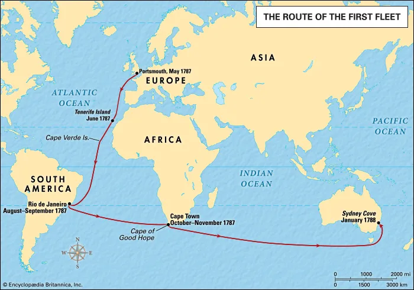

On the 19th of April, 1770, the east coast of Australia was spotted by Captain James Cook onboard the HMB Endeavour. Ten days later, the first landing was made at Botany Bay. After returning to Britain in 1771, the idea of colonising Australia was brought up at two parlimentary inquiries in 1779 and 1785, but to avail. The reasons for the initial rejection of the idea were the price and the East Indies Company. The British Government couldn't afford such a thing, especially after seven years of war against France from 1756 to 1763 and the East Indies Company also had trading rights in the Indian and Pacific Oceans, both of which bordered Australia.
France, after losing a number of it's colonies to Britain during the war, decided to attempt colonisation of Australia on an expedition to the Pacific lead by Jean-François de Galaup, comte de La Pérouse. France's ambitions were uncovered by the newly formed United States of America, and were leaked to Britain. Upon hearing this, Britain couldn't care less about money or the East Indies Company. The First Fleet, containing around 1,400 people and led by Captain Arthur Phillip, embarked at Portsmouth, England, bound for Botany Bay. Britain stated that the voyage was for convict transportation, especially since America was no longer an option, so as not to arouse any suspicions.
Upon hearing this, France immediately sent a letter to La Pérouse, who was exploring the Northen Pacific at the time. He cancelled the rest of his plans in the Pacific but not before making one last detour to the non-existent 'treasure islands'. He was using a map published by the British Admiralty which had many fake islands. The British knew for a century that the islands didn't exist, but were kept as false islands serve as great sources of confusion for those who came after Cook. Having wasted 3-4 weeks, Phillip beat La Pérouse by only five days.
La Pérouse stayed in Australia for six weeks before embarking and both his ships were never seen again until 40 years later when their wreckage was found on the Solomon Islands. If the British removed the treasure islands from their maps when they were proven fake, Australia's history might have been completely different. Although the British sent 11 ships compared to France's 2, most of them were unarmed convicts with no skills in combat, so Britain wouldn't be able put up much of a fight. Australia would have been a French colony, and it's history woud have been very different.
